Problems for Lecture 28: Conservation of Linear Momentum 1#
Question 1 (***)[R]#
Water flows through a sluice gate as shown below. The friction losses through the gate are estimated to be 0.2 m. Find the horizontal thrust of the water per meter width on the sluice gate. Given: y1 = 2.2 m, y2 = 0.4 m, y3 = 0.5 m

Answer
\( 12.33 \; kN\;to \;the \;right \)
Apply the momentum equation in the horizontal direction.
Find the velocities before and after the gate using the Energy equation.
Apply Newton’s Second Law to find the horizontal force.
Question 2 (***)#
Flow occurs over a spillway with a width of 100 m. The spillway has a cross section as shown below. The water depth on the upstream side of the spillway (y1) is 20 m, and on the downstream side (y2) is 1.5 m. The friction energy headloss over the spillway is 1.2 m. Determine the horizontal force of the water on the spillway.
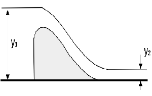
Answer
\( 147.7 \; MN\; to \; the \; right \)
Apply the momentum equation in the horizontal direction.
Find the velocities using the Energy equation.
Apply Newton’s Second Law to find the horizontal force.
Solution
Show code cell outputs
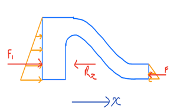
Conservation of mass:
Conservation of Energy:
Once the velocities at both sections are determined, the conservation of momentum can then be applied:
The centroid of the spillway is:
Show code cell outputs
The force on the structure is on the same site but opposite in direction (\(N \mathrm{III}\)）: \(F_x = 147.735 MN\) to the right.
Question 3 (***)[R]#
The inlet water passage shown in the figure below is 3 m wide (normal to the plane of the figure) and narrows down to be 2.5 m wide at the outlet section. Determine the horizontal force acting on the structure. Assume ideal flow.
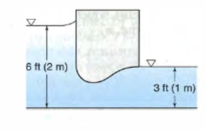
Answer
\( 12.2 \; m^3/s\; ;\;11.98\;kN\;to\;the\;right \)
Apply the momentum equation in the horizontal direction.
Find the velocities using the Energy equation.
Apply Newton’s Second Law to find the horizontal force.
Problems for Lecture 29: Conservation of Linear Momentum 2#
Question 1 (**)[R]#
A nozzle is attached to a pipe as shown below. The inside diameter of the pipe is 100 mm, while the water jet exiting from the nozzle has a diameter of 50 mm. The pressure at section 1 is 500 kPa, and the velocity at sections 1 is 6 m/s. Calculate the force of the water on the nozzle.

Answer
\( 3.079\; kN\; to\; the\; right \)
Use the continuity equation to find the velocity at the nozzle exit.
Apply \(N \mathrm{II}\) equation in the x-Direction to calculate the force on the nozzle.
Question 2 (**)#
The diameters in the figure below are 750 mm and 500 mm. The pressure at point 1 is 650 kPa and the velocity 2.8 m/s. Neglecting friction, find the resultant force on the horizontal conical reducer if water flows:
a. to the right.
b. to the left.
c. What would happen with the previous answers if we did not neglect friction?

Answer
\( a) \;158.3 \; kN\;to\;the\;right \)
\( b) \;158.3 \; kN\;to\;the\;right \)
\( c) \;increase \; Fx\;in\;(a)\;and\;decrease\;Fx\;in\;(b) \)
Apply the conservation of mass to relate the flow rates at different sections and solve for the unknow velocity.
Apply the energy equation.
Apply \(N \mathrm{II}\) in the horizontal direction to calculate the force on the reducer.
Question 2 (a)
Solution
Show code cell outputs
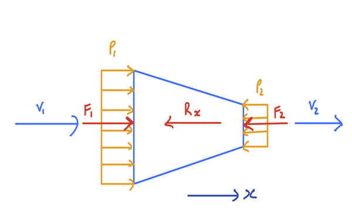
Conservation of mass:
Conservation of energy:
Conservation of momentum:
Show code cell outputs
Force of the water on nozzle is 158.3 kN to the right
Question 2 (b)
Apply the conservation of mass to relate the flow rates at different sections and solve for the unknown velocity.
Apply the energy equation, assuming no friction, with the direction of flow reversed.
Apply NII in the horizontal direction to calculate the force on the reducer, considering the reversed flow direction.
Question 2 (c)
Assuming the same pressure at the larger section in both cases, as given, friction will reduce \(F_2\) and therefore increase \(R_x\) in case (a) and do the opposite in case (b).
Problems for Lecture 30: Conservation of Linear Momentum 3#
Question 1 (***)[R]#
A 90° bend bend of a 300 mm diameter pipe lies in the horizontal plane. Water flows through the pipe at a velocity of 3 m/s and the inlet of the bend has a pressure of 50 kPa. Neglecting friction losses, calculate the resultant force of the water on the bend.
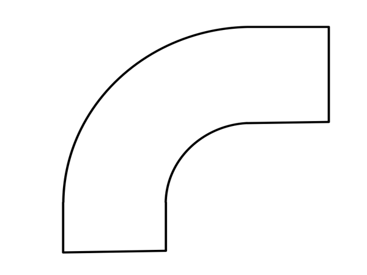
Answer
\( 19.4 \; kN\ \)
Use conservation of energy (Bernoulli equation) to find the exit pressure.
Apply conservation of momentum in the x and z directions to calculate the force components on the bend.
Solution
Show code cell outputs
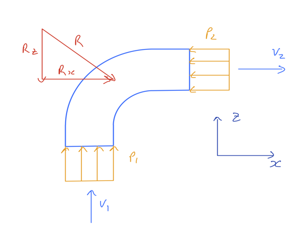
Conservation of energy:
\begin{align*} \text{but} \quad z_1 &= z_2 \quad;\quad \text{bend in the horizontal plane}\ v_1 &= v_2 \quad; \quad \text{Conservation of mass}\ \text{thus} \quad p_1 &= p_2 \end{align*}
Conservation of momentum in x:
Conservation of momentum in z:
Show code cell outputs
The force of the water on the bend is the same size, but opposite in direction.
Question 2 (***)[R]#
A reducing right-angled bend lies in the horizontal plane. Water enters from the west at a velocity of 3 m/s and a pressure of 50 kPa, and leaves toward the north. The diameter of the entrance is 500 mm and at the exit 250 mm. Neglecting friction losses, find the magnitude of the x and y components of the resultant force on the bend.
Answer
\( 11.6 \; kN\;;\;6.2\;kN \)
Use conservation of energy (Bernoulli equation) to find the exit pressure.
Apply conservation of momentum in the x and z directions to calculate the force components on the bend.
Solution
Show code cell outputs
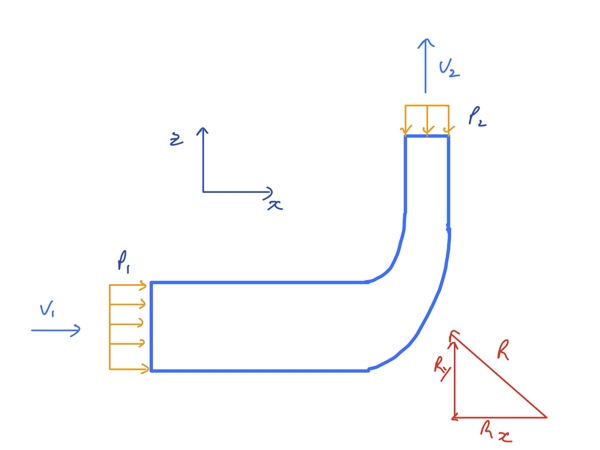
Conservation of energy:
\begin{align*} z_1+\frac {p_1}{\rho g}+\frac{v_1^2}{2g} &= z_2+\frac {p_2}{\rho g}+\frac{v_2^2}{2g}\ \text{but} \quad z_1 &= z_2 \quad ; \quad \text{horizontal plane}\ \frac {p_1}{\rho g}+\frac{v_1^2}{2g} &= \frac {p_2}{\rho g}+\frac{v_2^2}{2g}\ p_2 &= (\frac {p_1}{\rho g}+\frac{v_1^2}{2g}-\frac{v_2^2}{2g}) \rho g \end{align*}
Conservation of momentum in x:
Conservation of momentum in z:
Show code cell outputs
The force on the bend in the x direction is 11.584 kN to the right and the force in y direction is 6.2 kN down. (NⅢ）
Question 3 (***)¶#
A perforated plate with 50% of its area consisting of small holes is installed at the outlet of a 30 cm diameter horizontal water pipe carrying water at a velocity of 2 m/s. Neglect energy losses and calculate the force of the water on the perforated plate. Assume that the pressure head in the pipe is much greater than it’s diameter, so that you can use a uniform pressure distribution for any pipe cross section.
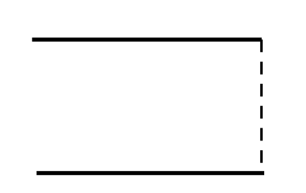
Answer
\( 142 \; N\;to\;the\;right \)
Use conservation of mass to find the water velocity through the holes.
Apply the Bernoulli euqation to find the pressure difference.
Use conservation of momentum to calculate the force on the perforated plate.
Solution
Show code cell outputs
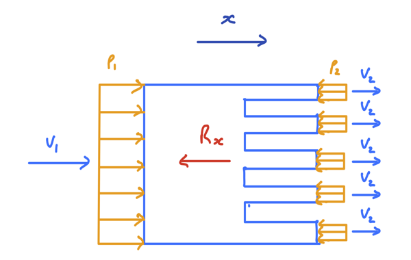
Conservation of mass:
where \(A_2 = 0.5 A_1\) .
Conservation of energy:
\begin{align*} \text{where} \quad z_1 &= z_2 \quad ; \quad \text{horizontal plane}\ p_2 &= 0 \quad ; \quad \text{free jet} \end{align*}
NⅡ: $\( \sum F_x = \rho Q (v_{2x}-v_{1x})\\ p_1 A_1 - R_x = \rho Q (v_{2x}-v_{1x})\\ \)$
Show code cell outputs
The force on the plate is 141.4 N to the right.(NⅡ)
Question 4 (****)#
The figure below shows a pipe that ends in a set of two nozzles (points 2 and 3) at right angles to each other, and exiting into the atmosphere. The nozzles are in the horizontal plane. The pipe has a diameter of 150 mm and nozzles 2 and 3 have exit diameters of 100 and 50 mm respectively. The exit velocity at both points 2 and 3 is 10 m/s. Assume ideal flow.Calculate the following:
a) The flow rate and velocity at at point 1.
b) The pressure at point 1.
c) The size and direction of the force that the fluid exerts on the pipe.
d) Assume the pressure at point 1 remains as in (b), but an energy headloss of 0.5 m occurs through each of the nozzles at points 2 and 3. Calculate the flow rate in the system and the velocities at points 1 and 2. Ignore energy losses other that those at the nozzles and assume the distribution of the flow between 2 and 3 remains the same as in (a).
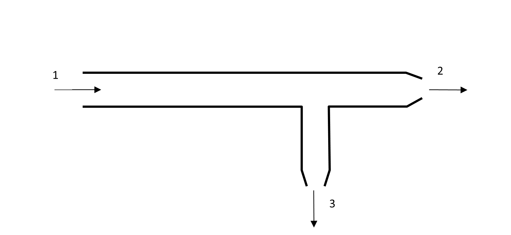
Answer
\( a) \;5.55 \; m/s \)
\( b) \;34.57 \; kPa \)
\( c) \;420 \; N\; at\; 27.9\; °\; above\; East \)
\( d) \;91 \;L/s\;;\; 5.15\; m/s\;;\; 9.3 \;m/s \)
Question 4 (a)
To calculate the flow rate and velocity in point 1 the conservation of mass can be used:
Question 4 (b)
Using conservation of energy:
\(z_1=z_2\) because is horizontal and \(p_2=0 Pa\) because of atmospheric pressure
Considering the assumptions, the pressure in point 1 is:
Question 4 (c)
Momentum in x:
Momentum in y. It is important to include the velocity sign in this equation; in this example \(v_{3y}\) is negative.
Once the \(F_x\) and \(F_y\) are calculated, the force can be determine as:
and the direction of the force can be calculated as:
Show code cell outputs
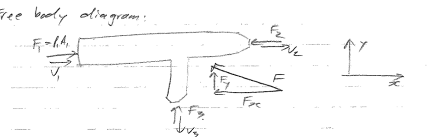
Question 4 (d)
Using conservation of energy:
\(z_1=z_2\) because is horizontal and \(p_2=0\) because of atmospheric pressure
Assuming the distribution of the flow between 2 and 3 remains the same as in (a), it is necessary to calculate the distribution
Using conservation of mass:
Using conservation of energy and mass with an energy headloss of 0.5 m, we have:
Problems for Lecture 31: Conservation of Linear Momentum 4#
Question 1 (**)#
A 40 mm diameter jet has a velocity of 25 m/s. If this jet were to strike a large flat plat normally, what would the resultant force on the plate be?
Answer
\( 785 \; N \)
The jet direction will be parallel to the plate after hitting it.
Assume the jet speed remains constant.
Ignore friction losses.
Apply NⅡ.
Solution
Show code cell outputs
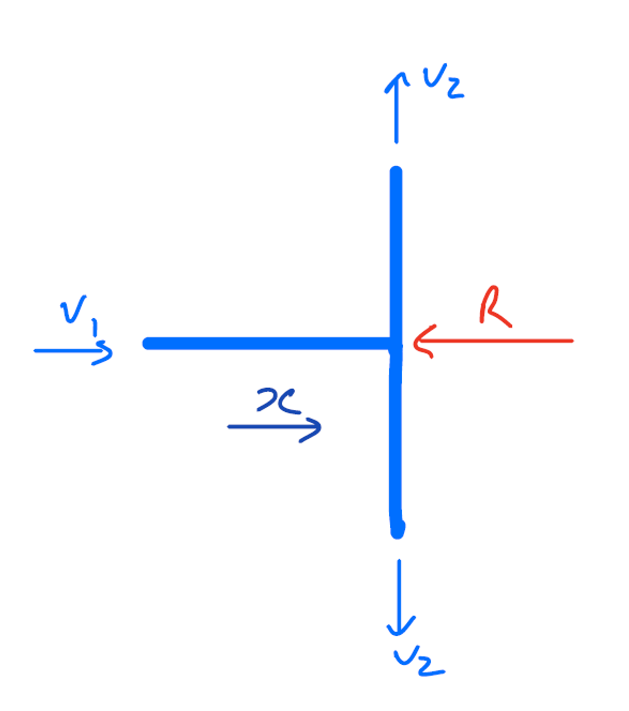
NⅡ:
Show code cell outputs
Question 2 (***)#
Water hits the curved plate shown below that entirely reverses the flow direction. The diameter of the jet is 50 mm and it hits the plate at a velocity of 12 m/s. The water leaves the plate at the same velocity, but in the opposite direction. Find the force exerted by the water on the vane.
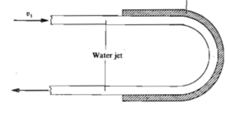
Answer
\( 565 \; N\; to\; the\; right \)
The jet direction will be parallel to the plate after hitting it.
Assume the jet speed remains constant.
Ignore friction losses.
Apply NⅡ.
Show code cell outputs
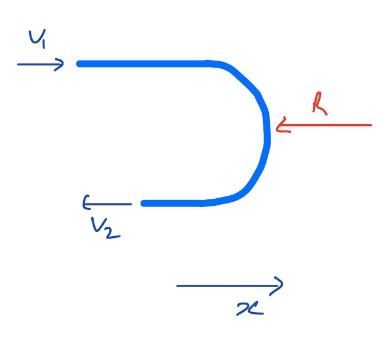
Question 3 (***)[R]#
A jet is bent through an angle θ = 120° by a blade in the horizontal plane as shown below. The water jet has a velocity of 25 m/s and a diameter of 20 mm. Calculate the size and direction of the force on the blade.
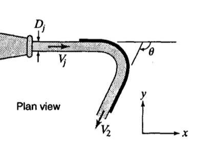
Answer
\( 340 \; N\;at\;30\;°\;above\;the\;horizon \)
The jet direction will be parallel to the plate after hitting it.
Assume the jet speed remains constant.
Ignore friction losses.
Apply NⅡ.
Solution
Show code cell outputs
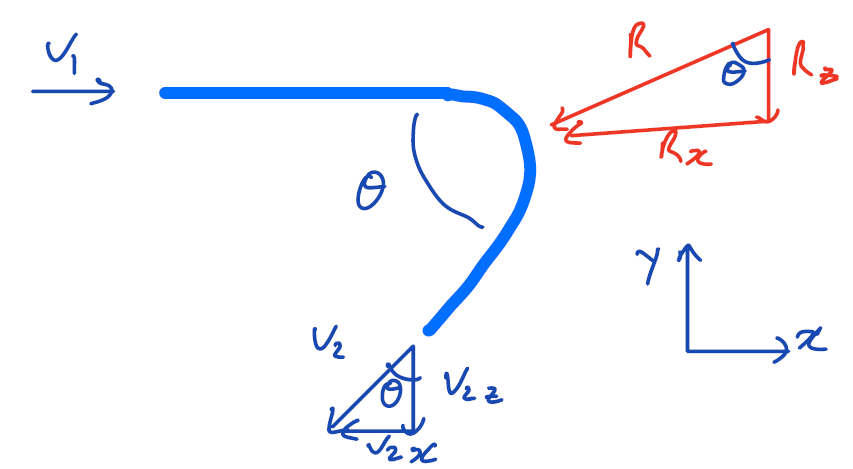
NⅡ in the x direction:
\begin{align*} v_1 & = 25 \quad \text{m/s}\ v_2 &= v_1\ d_1 &= 180^\circ - 120^\circ\ v_{1x} &= v_1\ v_{1y} &= 0\ v_{2x} &= -v_2 \sin \theta\ v_{2y} &= -v_2 \cos \theta\ -R_x &= \rho Q (v_{2x}-v_{1x})\ -R_y &= \rho Q (v_{2y}-v_{1y})\ \end{align*}
Show code cell outputs
Question 4 (***)[R]#
A jet of water with a velocity of 25 m/s and diameter of 40 mm strikes a blade in a horizontal plane. If the angle of deflection is 115° and friction reduces the velocity to 22 m/s, find;
a. the component of the force acting on the blade in the direction of the jet.
b. the component of the force normal/ perpendicular to the jet.
c. the magnitude and direction of the resultant force exerted on the blade.
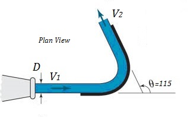
Answer
\( a) \;1.077 \; kN\; to\; the\; right \)
\( b) \;0.626 \; kN\; downwards \)
\( c) \;1.246 \; kN\; at\;30.2\;°\;below\;east \)
Question 4 (a)
The force on the X-axis can be calculated with the momentum equation as:
In this example, the velocity component along the X-axis can be determined as follows
In the conservation of momentum, it is important to include the sign that indicates the direction of the velocity component. Therefore, in this exercise, the \(v_{2x}\) component is negative
Question 4 (b)
The force on the Y-axis can be calculated with the momentum equation as:
In this example, the velocity component along the X-axis can be determined as follows
In this example, there is no component of the velocitu one in the Y-axis
Question 4 (c)
Once the \(R_x\) and \(R_y\) are calculated, the force can be determine as:
and the direction of the force can be calculated as:
Problems for Lecture 32: Transients – Elastic fluid in a rigid pipe#
Question 1 (**)[R]#
A 2 km long, 500 mm diameter pipeline carries water at a velocity of 2 m/s. Calculate the pressure rise in the system if water assuming a rigid pipe and a water temperature of 15 °Celsius.
Answer
\( 298 \; m \)
Calculate the celerity of the transient wave c.
Calculate the pressure increase using the Joukowski equation.
Question 2 (**)#
Calculate the celerity of a pressure wave in water at 20 °C assuming a water density of 1000 kg/m3 . What difference does it make to your answer if change in water density with temperature is taken into account?
Answer
\( 1476.48 \; m/s\; 1477.81\; m/s\; ,\; thus\; less\; than\; 0.1\; \% \; difference \)
Calculate the celerity of the transient wave c.
Calculate the pressure increase using the Joukowski equation.
Solution
From Table A.1, the density of water at 20 °C is \(998.2 kg/m^3\)
From Table A.4, \(E_v= 1030 x10^6 N/m^2\)
The effect of the density can be calculated with the difference between the celerities:
Show code cell outputs
Question 3 (**)[R]#
Find the celerity of a pressure wave in benzene if a rigid pipe is assumed. If the initial flow velocity is 2 m/s, what will the increased pressure and pressure head be if a valve in the pipe is suddenly closed?
Answer
\( \;1081.88\; m/s\;;\; 1.9\; MPa\;; \;220.57\; m \;benzene \)
Calculate the celerity of the transient wave c.
Calculate the pressure increase using the Joukowski equation.